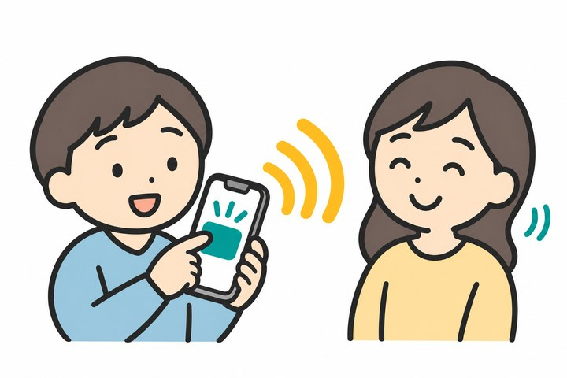

iPhone・iPad・Android の会話アプリ
声が出なくても、
指で話せる。
押した言葉を、スマホがその場で声にします。50音の文字盤でも、キーボードでも、よく使う文でも、絵カードでも、押せば1回で声になります。風邪や手術で声が出ないときにも、長く声を失ったかたにも、話せないかたのそばにいる介護・看護の現場にも。
App Store・Google Play で配信予定買い切りで全部の機能が使えます。登録・アプリ内課金・サブスクリプション・広告はありません。通信もしません。

こんな困りごとのために
打つのが遅くて、相手を待たせる
「はい・いいえ・わからない・ちょっと待って」はいつも画面にあって、1回押すだけ。入っている約150の文（返事・体調・お願い・医療・店・仕事と学校）も、押せばすぐ声になります。
相手が気づいてくれない
［呼ぶ］でチャイムを鳴らせます。話す前に毎回鳴らす設定もあります。
読み方がおかしい・声が機械的
端末の高品質の声やパーソナルボイス（自分の声）を選べます。速さと高さも変えられます。「行って」のように読み間違える語は、読み方の辞書で直せます。
字を打てない・思い出せない
絵カード（からだ・ほしい・して・気持ち・場所）と、痛みの強さ 0〜10 の段。押すと「お腹が痛いです」のように話します。
広告が出て、人に見せにくい
広告はありません。大きな字で相手に見せる画面もあり、向かいの人に向けて上下を逆にできます。
ボタンや字が小さい
文字盤のキーは大きく、字の大きさは3段から選べます。iPad では左右2列で使えます。
できること
| 打つ | 50音の文字盤（濁点・小さい字・ー・句読点）・キーボード（漢字）・英語の画面では A〜Z の文字盤 |
|---|---|
| 選ぶ | よく使う文（約150・分類ごと・並べかえ・編集）・自分の文・家族の名前・最近話した文 |
| 絵で | 絵カード40枚（からだ・ほしい・して・気持ち・場所）・痛みの強さ 0〜10 |
| 伝える | 押してすぐ声に・はい／いいえ／わからない／ちょっと待って・呼びかけの音・大きな字で見せる（上下を逆に） |
| 声 | 端末の声を選ぶ・パーソナルボイス（iPhone・iPad）・速さ・高さ・読み方の辞書・消音スイッチでも鳴る |
| そのほか | 画面の向きを固定・iPad と iPhone Duo の広い画面・日本語と英語・通信しない |
ゆびごえは医療機器ではありません。急ぎのときは、ナースコールや 119 番など、決まった方法で知らせてください。使い方・プライバシーポリシーもご覧ください。